Module 6: Real Numbers
Objectives
By the end of this module, for simple programs with real numbers, you will be able to:
- Create variable declarations for variables.
- Assign values to variables by simple assignment, and print them out.
- Demonstrate ability to perform operations for a desired output.
- Evaluate expressions with variables in them.
- Convert English descriptions of operations into expressions.
- Mentally trace execution with expressions and calculations.
- Mentally trace expressions and calculations inside for-loops.
- Produce desired output using for-loops and calculations.
- Identify new syntactic elements related to the above.
6.0 What are real numbers?
Let’s start with some math facts:
- Whole numbers like 3, 42 and 1024 are integers.
(As an aside: integers include 0 and the negative ones like -2 or -219). - The collection of all integers is infinite in size.
- But integers are limited because some operations on integers do not yield integers:
- 30 ÷ 5 gives 6, which is an integer.
- But 31 ÷ 5 is not an integer, yet it’s a quantity.
- Real numbers include all the integers but also numbers like 3.141, and -615.2368.
- The collection of all real numbers is also infinite. Interestingly, it’s a bigger kind of infinite (but that’s a rather subtle math argument outside the scope of this course).
- The term real is just that: a term that’s came about historically to describe all these numbers.
- You might wonder: is there any other kind of number?
- Turns out: yes, there a fascinating (and extraordinarily useful) kind of number called an imaginary number, or more generally, a complex number.
(We won’t be working with these in his course.) - What does one do with real numbers?
- The same operations: +, -, *, /
- What’s nice is that applying these to real numbers will always result in real number results.
- For example:
x = 3.14
y = 2.718
z = x + y
print(z)
w = z * (x + y) / (x - y)
print(w)6.1 Excercise: Type up the above in my_real_example1.py. What is the output?
- You might have seen 5.8580000000000005 as the value of z printed out.
- However, you might also have seen something slightly different because of the approximate nature of such calculations, a limitation of computer hardware.
- These tiny errors are tiny indeed, but vary slightly from one computer to another, generally occuring around the 16th decimal place: 0.00000000000000001
- Do we need to worry about this? Only if we are engaged in complex scientific calculations.
- Occasionally, however, it can matter. For example, if two people calculate mortgage interest (with real consequences) slightly differently, it could lead to a legal conflict.
Quick review of some relevant math:
- One kind of operation that’s useful is power.
- We write 26 to mean 2 x 2 x 2 x 2 x 2 x 2 (six times)
- It’s easy to see that you could make this work for real numbers that get multiplied: 2.566 = 2.56 x 2.56 x 2.56 x 2.56 x 2.56 x 2.56
- But could you do 26.4? Turns out, yes, you can do this even if it’s not easy to see or intuit.
(We would expect 26.4 to be larger than 26 and smaller than 27, which it is.) - The next step then is to allow numbers like 2.566.4.
- In fact, you can take any real number as the mantissa (the 2.56 in 2.566.4) and any real number as the exponent (the 6.4 in 2.566.4).
- Let’s put this in code and introduce a new operator to raise a number to a power, as in 2.566.4).
x = 2 ** 6
print(x)
y = 2.56 ** 6.4
print(y)6.2 Excercise: Type up the above in my_real_example2.py. What is the output? Consider 2.56x = y. Can you guess what approximate value of x would make y become 400? Play around with the number 6.4 in the program above and see if you can guess approximately what value would make y become 400.
Let’s explore further:
- The technical term for “what is x that would make 2.56x = 400?” is logarithm.
- We would say: x = log2.56(400).
(Read this as: x is equal to log of 400 to the base 2.56). - We can calculate this directly:
import math
x = math.log(400, 2.56)
print(x)- Here we’ve introduced some new concepts: 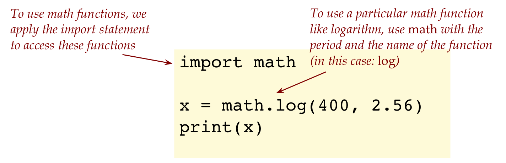
- Just like you can ask Python to calculate logarithms using
math.log, you can do other kinds of “calculator” functions conveniently. - Example:
math.sqrtfor square roots.
6.3 Excercise: In my_real_example3.py, fill in code below
import math
# Write a line of code here
print(x)to compute the square root of 2 and print the square root (and only the square root - just one number).
6.1 Going from reals to integers and strings
Consider this program:
import math
x = 3.141
print('x=' + str(x))
i = math.floor(x)
j = math.ceil(x)
print('Rounding down x gives ' + str(i))
print('Rounding up x gives ' + str(j))- The floor function identifies the integer part of a number like 3.141, in this case 3.
- ceil identifies the next higher integer, in this case 4.
- So, any number with digits after the decimal point like 3.141 lies between its floor and ceiling.
6.5 Excercise: Type the above in my_real_example4.py. Then, add additional lines of code to print the floor and ceiling of 2.718 in the same way that the floor and ceiling of 3.141 were printed above.
Let’s point out a few things: 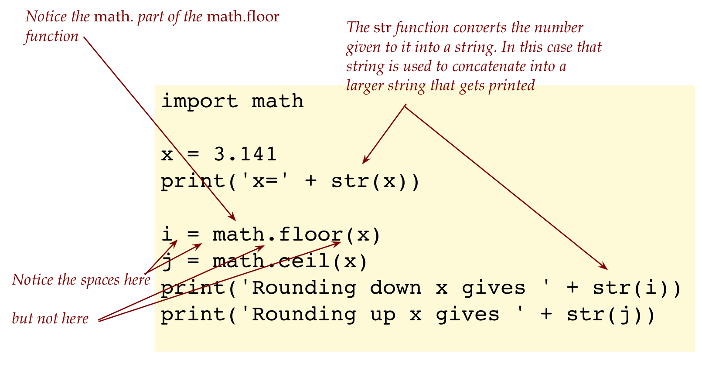
Next, getting real numbers as input:
import math
# input always results in a string
x_str = input('Enter a number: ')
# This is how we convert a string into a real number:
x = float(x_str)
# We use str to embed a number in a string:
print('The square of the number you entered is: ' + str(x*x))- We use the
int()function to convert a string representation of an integer into an actual integer ready for arithmetic, as in:
pounds_str = input('Desired flour in pounds: ')
pounds = int(pounds_str)
ounces = 16 * pounds
print('Flour amount in ounces: ' + ounces)- The equivalent for real numbers is float:
x = float(x_str)- Why is it called so?
- Observe that we can write the number 234.56 as 23.456 x 101 or as 2.3456 x 102 or as 0.23456 x 103, or to exaggerate this idea: 0.000000000023456 x 1013
- The decimal point can thus, be “floated” around by adjusting the exponent (like 13).
- This is called floating-point notation.
- So, what does it mean to have a string representation of a number versus the actual number?
- First, consider this program:
some_string = '3.141' x = float(some_string) # Now we can use x in arithmetic y = x / 2- We cannot use
some_stringin arithmetic.
- The following does NOT work:
x = '3.141'
y = x / 2
print(y)6.6 Excercise: What is the error in the above program? Now change the second statement from y = x / 2 to y = x * 2. What do you see? Write your code in my_real_example5.py. Submit the version with y = x / 2 but describe both cases in your module pdf.
The last exercise illustrates the strange way in which operators like + and * are repurposed for strings when used with strings:
- Consider this example:
s = 'Hello'
t = ' World'
u = s + t
print(u)
v = s * 3 # Makes 3 copies of s and concatenates them
print(v) # Prints HelloHelloHello6.7 Excercise: Type up the above in my_string_example.py and confirm.
Now, back to real numbers.
6.9 Excercise: In my_conversion_example.py write a program that asks the user to enter a distance in kilometers, and then converts to miles and prints that number.
6.2 Real numbers and loops
There are two ways in which we’ll work with real numbers and loops:
- The first will use integers to drive the loop’s iterations as in:
for k in range(1, n):
# do stuffHere, k, 1, and n, are all integers.
- The second is more advanced in that real numbers can themselves be used in the range. We’ll tackle this approach later but we’ll give you a preview of what it looks like:
for r in np.arange(0.1, 1, 0.2):
# do stuffLet’s start with an example:
num_years = 5
interest_rate = 5.0
amount = 80
for year in range(1, num_years + 1):
interest = (interest_rate/100) * amount
amount = amount + interest
print('After ' + str(year) + ' years,', end='')
print('amount = ' + str(amount))6.11 Excercise: Type up the above in my_compound_interest.py. What is the final amount printed? In your module pdf, trace through the iterations above using a table, tracking the variables year, amount, interest.
Let’s point out: 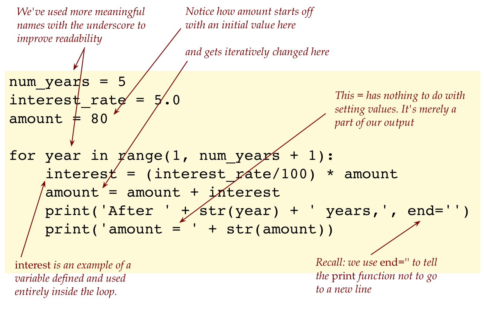
6.12 Excercise: In my_compound_interest2.py, write two successive (not nested) for-loops to compare what happens when $1000 is invested for 20 years in each of two mutual funds, one of which has an annual growth rate of 3%, and the other 8%. Write your program so that it only prints at the end of the program, and prints the amount by which the 8% fund exceeds the 3% fund (at the end of 20 years). Now you know what a 401-K program is about.
6.3 Some Greek history via programming
Zeno’s paradox: - Zeno was a Greek philosopher famous for creating several apparent paradoxes.
- His most famous one: the hare and the tortoise
- Suppose a hare and tortoise are separated by 1 unit of distance, for example: 1 mile. 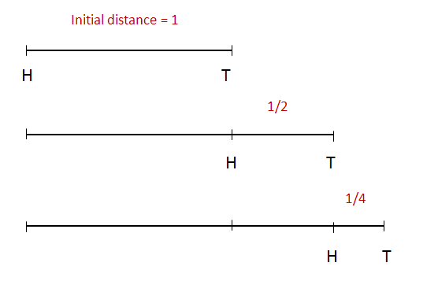
- Suppose hare is twice as fast as tortoise.
- In the time the hare covers 1 unit, the tortoise has moved foward 1/2 unit.
- In the time taken to cover this 1/2 unit, the tortoise has moved forward 1/4 unit … etc.
- Zeno claimed that by the time the hare catches up, the tortoise will have traveled:
1/2 + 1/4 + 1/8 + 1/16 + …
(The dots at the end indicate “keep adding these terms forever”) - This is an infinite sum. He said: if you add an infinite number of numbers, you’ll get something infinitely big.
- Thus, Zeno’s paradox is: the hare will never catch up.
- Let’s resolve this by writing a program to compute
1/2 + 1/4 + 1/8 + 1/16 + … - Such a sum is often called a series.
- Let’s write a program to compute this for any number of terms in the series.
- We’ll start by noticing that each successive term is half the previous one:
- 1/4 is half of 1/2.
- 1/8 is half of 1/4.
- 1/16 is half of 1/8.
- … and so on.
- To compute half of something, we multiply by 1/2.
- Here’s the program:
n = 5
total = 0
term = 1/2
for k in range(n):
total = total + term
term = term * (1/2)
print(total)6.14 Excercise: Type up the above in my_zeno.py. In your module pdf trace through the values of each of the variables.
6.15 Excercise: Type up the above in my_zeno.py. In your module pdf trace through the values of each of the variables.
In my_zeno2.py, change n to 100, and then 1000, and report the results of the final total, submitting the program with n set to 100. Write a cheeky one-paragraph letter to Zeno (in your module pdf) and explain why he was wrong.
Let’s point out: 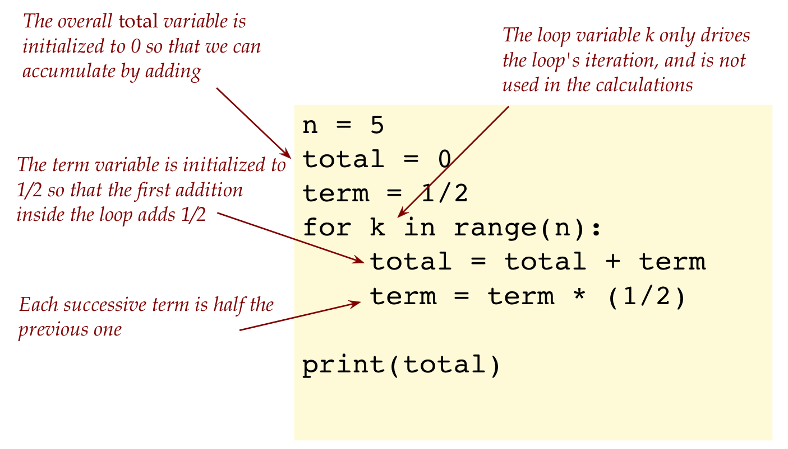
6.4 A statistical application
Let’s use a loop to compute that most basic of statistical things: an average
For example, suppose we wish to compute the average of the numbers from 1 to 10:
n = 10
total = 0
for k in range(1, n+1):
total = total + k
avg = total / n
print('Average=' + str(avg))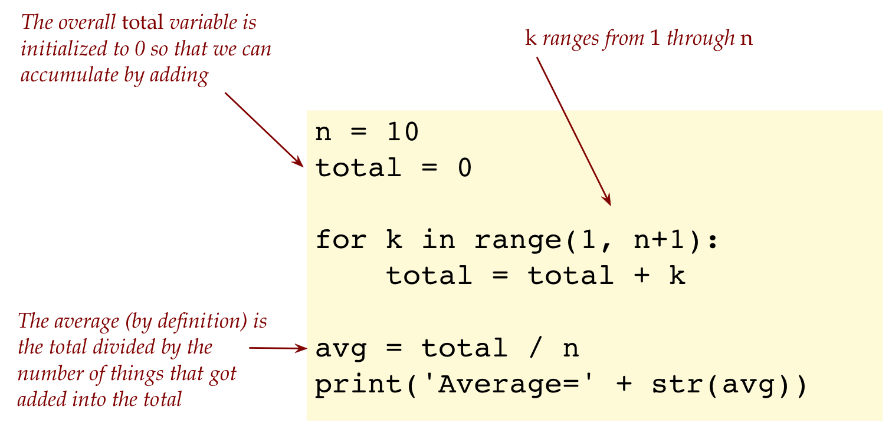
6.16 Excercise: Type up the above in my_stats1.py. What is the average?
6.17 Excercise: In my_stats2.py, modify the above code to compute the average of odd numbers from 1 through 9, and check against the answer you get computing by hand. Then, use your program to compute the average of odd numbers between 1 and 100.
We’ll next look at a problem at the intersection of language and statistics:
- Many nouns in English are long, especially words ending in “tion” like “conservation”.
- In contrast, we see a lot of short verbs like “go”, “eat” and so on.
- So, is it true that English nouns are, on average, longer than English verbs? Let’s find out.
- One way to do this is to get all nouns and all verbs, compute average lengths and compare.
- However, we’ll do this statistically by randomly sampling nouns and verbs.
(Because this is the “stats” section of the module, after all.) - We’ll provide most of the code, leaving you to fill out one line:
import wordtool
n = 10
total = 0
for k in range(1, n+1):
word = wordtool.get_random_noun()
# FILL IN THE MISSING LINE HERE:
avg = total / n
print('Average word length = ' + str(avg))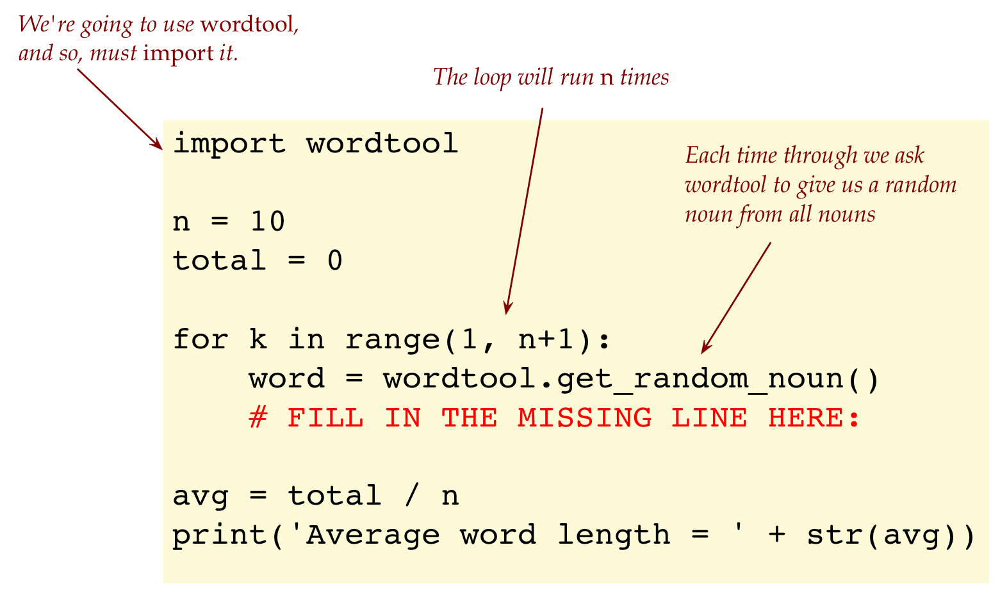
6.18 Excercise: Fill in the missing line and write up the program in my_stats3.py. You will need to download wordtool.py and wordsWithPOS.txt.
6.19 Excercise: In my_stats4.py, modify the above to estimate the average length of verbs. Compare the average length of nouns to the average length of verbs. Do you think n=10 is enough of a random sample? Try higher values of n. What should n be to feel assured that you have a sound comparison?
6.5 Plotting a function
Let’s plot the well-known () function.
- We’ll plot this in the range [0,10].
- Let’s start by picking 20 points to plot.
- We’ll divide the interval [0,10] into 20 so that the x values (along the x-axis) are
0
0.5
1.0
1.5
... (20 equally spaced values along x-axis)
9.5
10.0- Pictorially, this is what we’ve done so far
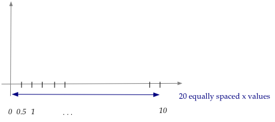
- Then, the y-values are calculated by applying the function:
f(0) = sin(0) = 0
f(0.5) = sin(0.5) = 0.48
f(1.0) = sin(1.0) = 0.84
f(1.5) = sin(1.5) = 0.997
...
f(9.5) = sin(9.5) = -0.075
f(10.0) = sin(10.0) = -0.54- For now, don’t worry about the meaning of this sin function.
- Just think of it as, you give it a value like 0.5, and it gives back a number like 0.005.
- We’ll say more about this below.
6.20 Excercise: Use a scientific calculator (included in every laptop) to calculate the sin values for the 20 input values beginning with 0, 0.5, 1, … etc .. until 10. Then plot this by hand on paper and include a picture in your module pdf.
Let’s now do the plotting in code:
from drawtool import DrawTool
import math
dt = DrawTool()
dt.set_XY_range(0,10, -2,2)
N = 20
x_spacing = 10 / N
x = 0
for k in range(0, N):
y = math.sin(x)
dt.draw_point(x, y)
x = x + x_spacing
dt.display()6.21 Excercise: Download drawtool.py into your module6 folder. Then type up the above in my_functionplot.py and execute. Change N to 100. This should produce a smoother curve. Next, change the statement
for k in range(0, N):to
for k in range(1, N+1):Explain (in your module pdf) why this does not change the results.
Let’s point out: 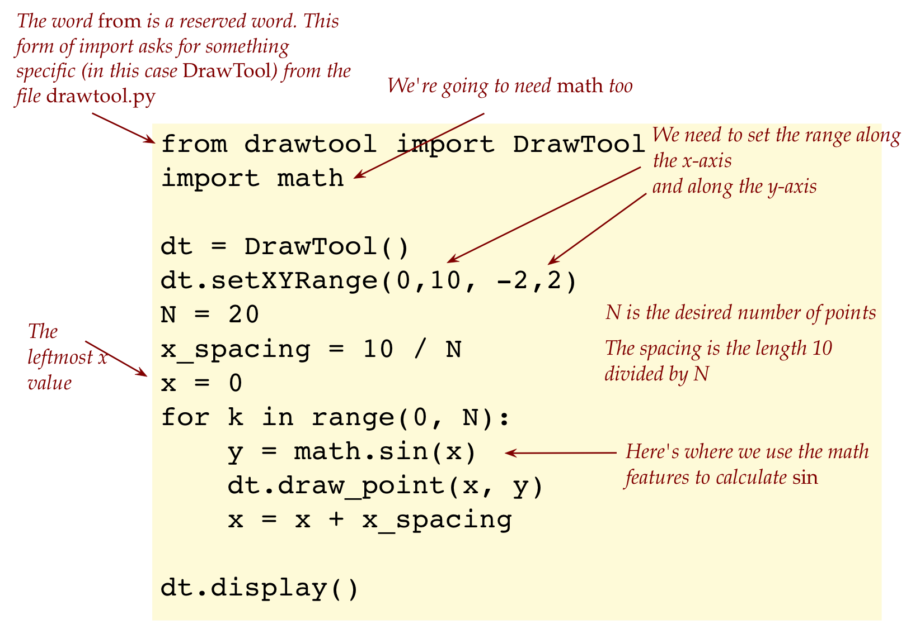
- Much of the complication in this program comes from how we use another program in our program:
- To perform plotting or drawing, we will use the
drawtool.pyprogram. - To use this program involves many types of statements, such as:
among others.dt = DrawTool() dt.set_XY_range(0,10, -2,2)- There are aspects we’re not going to be able to understand now, but we can at least use the program.
- To perform plotting or drawing, we will use the
- Notice that when N=20, the spacing is 10/20 (which is equal to 0.5).
- If a higher value of N were used, we’d have smaller spacing and therefore a smoother curve.
About mathematical functions:
- The term function means different things in programming and math.
- For us in programming, a function is a chunk of code that can be referenced by a name and used multiple times just by using that name.
- In math, a function is a calculation mechanism, which we can think of as “something that takes in a number and outputs a number via a calculation”:
- For example: 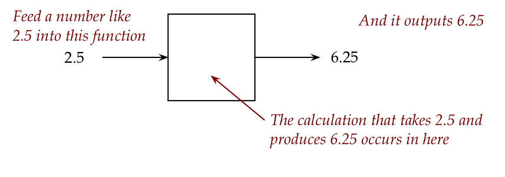
- In this particular case, suppose we feed in 8, we get 64 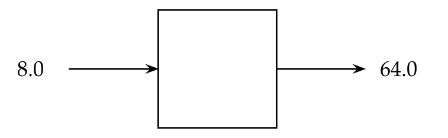
- The rule that turns the input number into the output number is: multiply the input number by itself.
- Thus: 82 = 64
- To describe this in a simpler way, we use symbols like x 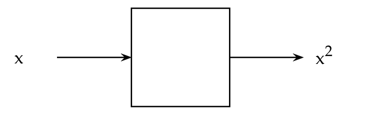
- And instead of drawing boxes, we use mathematical notation like this: f(x) = x2.
- Read this as: the function takes in a number x and produces x2.
- There are a gazillion functions, some of which are well-known and have stood the test of time.
- Amongst these well-known functions are the trigonometric functions like sin.
- Thus, sin(x) takes in a number x and produces a number as a result.
- In the early 1600’s Rene Descartes made a startling discovery that dramatically changed the world of math:
- You can make axes.
- For every possible x you can compute f(x)
- Then draw each pair x, f(x) as a point.
- This produces a curve that allows one to visualize a function.
- This is what we did when we plotting the sin function.
About the sin function:
- You may vaguely recall trigonometry from high-school, or have happily forgotten it.
- Perhaps you recall triangles and ratios of sides.
- The sin function arose from those ideas.
- While silly little triangles may seem a mere high-school math exercise, it turns out that functions like sin have proven extraordinarily useful both in real-world applications and in pure mathematics.
- We’re not going to require much math knowledge in this course but will make observations from time to time.
6.6 Plotting a curve with data
Next, let’s work with some real data
Consider the following data:| x | f(x) |
| 8.33 | 1666.67 |
| 22.22 | 3666.67 |
| 23.61 | 4833.33 |
| 30.55 | 5000 |
| 36.81 | 5166.67 |
| 47.22 | 8000 |
| 69.44 | 11333.33 |
| 105.56 | 19666.67 |
Let’s write code to display this data:
from drawtool import DrawTool
import math
dt = DrawTool()
dt.set_XY_range(0,120, 0,20000)
x = 8.33
f = 1666.67
dt.draw_point (x, f)
x = 22.22
f = 3666.67
dt.draw_point (x, f)
x = 23.61
f = 4833.33
dt.draw_point (x, f)
x = 30.55
f = 5000
dt.draw_point (x, f)
x = 36.81
f = 5166.67
dt.draw_point (x, f)
x = 47.22
f = 8000
dt.draw_point (x, f)
x = 69.44
f = 11333.33
dt.draw_point (x, f)
x = 105.56
f = 19666.67
dt.draw_point (x, f)
dt.display()6.22 Excercise: You already have drawtool.py in your module6 folder. Type up the above in my_dataplot.py and run. Do you see the points “sort of” along a jagged line? This is actual scientific data from observations made in 1929. It utterly shattered our perception of the world. Can you identify what this was about and explain the significance?
6.7 When things go wrong
In each of the exercises below, first try to identify the error just by reading. Then type up the program to confirm, and after that, fix the error.
6.23 Excercise:
x = 2 *** 6
print(x)Fix the error in my_error1.py.
6.24 Excercise:
x = 100
y = 0.1 * x
print('y=' + y)Fix the error in my_error2.py.
6.25 Excercise:
import math
x = input('Enter your height in inches: ')
y = math.floor(x / 12)
print('You are at least ' + str(y) + ' feet tall')Fix the error in my_error3.py.
6.26 Excercise:
for x in range(1.0, 2.0, 0.1):
print(x)Fix the error in my_error4.py so that the numbers 1.0, 1.1, 1.2, …, 2.0 are printed out.
Use integers in range but use separate variables to run through the real numbers.
6.8 About the reals, and math in general
We’ve gone a bit beyond our comfort zone into real numbers and into some applications.
We’ll end this module by pointing out a few more things about numbers in a mathematical sense, and say something about math anxiety. None of this will be on any exam.
Let’s start with numbers:
- The easiest kind of number to understand are the natural numbers.
- They are the numbers 1, 2, 3 … and so on.
- It’s an infinite set, and many operations like + and * applied to naturals result in a natural.
- But 3 - 5 is not a natural number, and neither is \[ \frac{3}{5} \].
- So, they’re limited in their use.
- If we expand the naturals and add 0, and all the negative numbers, we get \[
\ldots -3, -2, -1, 0, 1, 2, 3 \ldots
\] (The triple-dot that indicates “going on forever” occurs now on both sides, the positive side and the negative side.)
- However, they too are limited because neither \[ \frac{3}{5} \] nor \[ \frac{5}{3} \] are integers.
- The next kind of number to consider is rational number:
- A rational is a number that can be written as a fraction (or ratio) of integers.
- Examples: \[ \frac{5}{3}, \frac{46}{7} \]
- They include all the integers.
- Then we get to the real numbers introduced in this module.
- Within the real numbers there are interesting categories.
- Some real numbers are irrational and cannot be expressed as a ratio of integers.
- One example is \[ \sqrt{2} \], which bedeviled the Greeks a long time ago.
- Interestingly, one can prove that there are many more irrational real numbers than rational real numbers.
- Another kind of real number is an algebraic number, meaning they are the solution to an equation like \[ 3x^2 + 5 = 11 \]
- Those that aren’t algebraic go by the lovely name of transcendental number, such as \[ pi \].
- So, is every number a real number?
⇒ No, there are numbers like \[ \sqrt-1 \] that are imaginary. - You might think that an imaginary number couldn’t possibly have any use. It turns out that they are extraordinarily useful in many kinds of practical applications.
- Example: processing any kind of “wave” data, such as brain waves or seismic waves.
- Example: quantum computing.
Some ideas to reflect on:
- Which of the following most resonates with you?
- “I’ve always found math very hard and prefer to avoid it.”
- “I can tolerate math but would rather avoid it if possible.”
- “Math and I just don’t get along.”
- “Math is OK - I can do most of it but I don’t find it interesting or valuable.”
- “I can do math but am more interested in just applying it.”
- “I find math really interesting, even if I choose not to pursue math for math’s sake.”
- “I love math and will do as much of it as I can.”
- What ever your category, you should keep in mind:
- Math is a skill and takes practice, just like programming.
- Yes, it’s true that a lot of high-school is boring. Much of what’s interesting in math comes after calculus.
- The notion of not being suited to math is just a mindset. It can be changed.
- Even a little math is quite useful.
- You can learn quite a bit of math via programming, as we’ll show you.
- We’ll have more to say about the interesting and exciting connections between computer science, math, and other fields, including art.